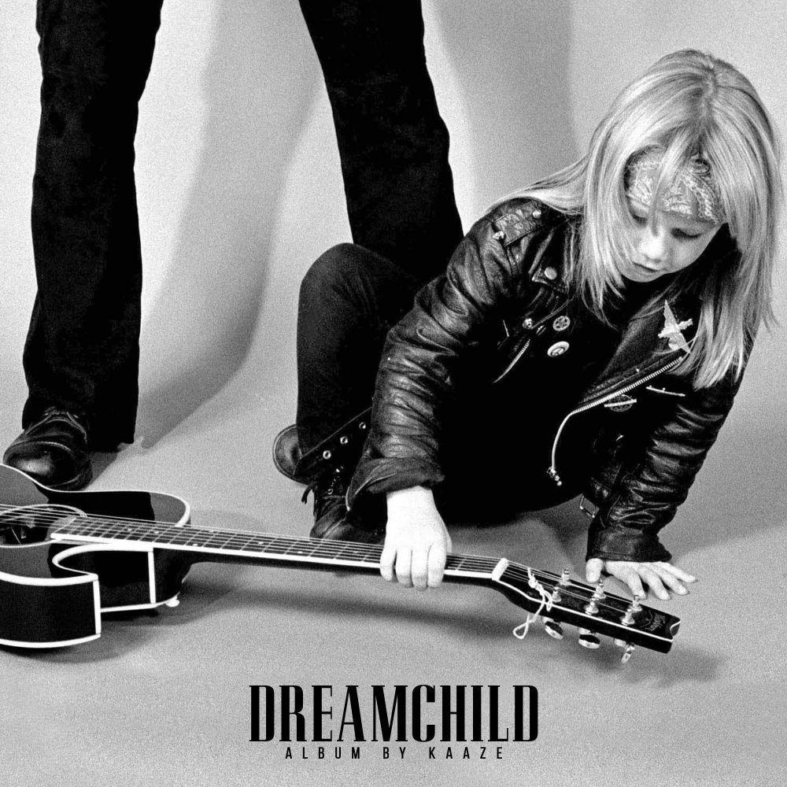

Después de una serie de lanzamientos este año, incluido el himno oficial del Dance Valley Festival 'Intuition', y la primera de sus colaboraciones de Nino Lucarelli 'I Should Have Walked Away'
el ahora prolífico DJ / productor residente de Revealed Recordings, KAAZE, lanza su álbum debut 'Dreamchild', que salio el 4 de octubre. El disco presenta varias colaboraciones: desde Maddix, KSHMR, hasta estrellas vocales
emergentes: Elle Vee, Jonathan Mendelsohn, KARRA, NEEN y Nino Lucarelli. El sonido progresivo melódico es característico en este album, ademas de que esta construido sobre las influencias divergentes de la infancia de KAAZE. El
ascenso impulsado por la guitarra acompañado por la poderosa voz de Nino está en algunos lugares, más recuerda a un arreglo glam-rock de los 80 que a un lanzamiento típico de Revealed, la guitarra eléctrica regresa para presentar
la voz de Jonathan Mendelsohn en "Poison Lips".
Simplemente KAAZE se está convirtiendo en sinónimo de himnos de festivales, este es un álbum lleno de giros y vueltas, pero siempre manteniendo un unísono entre las influencias de la infancia de la música alternativa y electrónica
de KAAZE.
Dreamchild marca un hito en la eminente carrera de un pionero progresivo verdaderamente en la cima de su juego, escucha el disco dando un clic a la portada de abajo.
